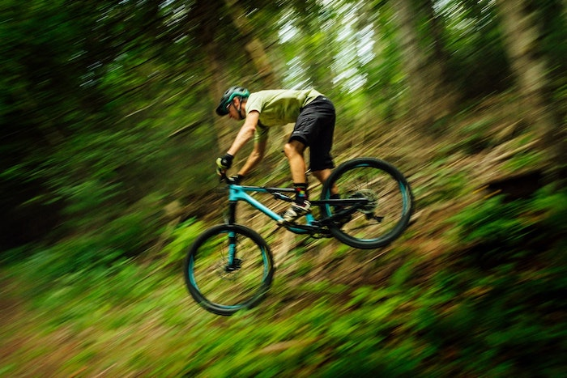

Target Audience
The target audience of the Southeast Idaho Local web site: Who: Local residents, men & women, of southeast Idaho, possibly visitors. Age: 18-55 Income: Income levels will typicaly be between $20,000 and above annually. Motivation: Residents looking for what to do locally with their family and friends. People wanting to know local events and important information about their city. Individuals wanting to know what the city offers to its residents. Someone looking for a new hobby. Popular trails for hiking and mountain biking.
Persona 1
Sally Lin: 30 years old. A stay at home mom of two children, ages 4 and 11 months. Her and her family recently moved to the Southeast Idaho area. She looking for ways to get to know the area. And find fun things for their family to do together and for her to do just with her children. Before children she worked as a software developer for Adobe. She occasionally takes on freelance work to keep her skills up to date. She loves all things outdoors and believe's its good for the mind and body to spend time outside everyday. She would likely access the site from her desktop and mobile device.

Persona 2
James Cliff: Single, 23 year old college graduate. James works remotely as a UX designer for a tech company in Utah. He has decent pay, $60,000 a year, and few resposibilites. He spends most if his freetime seeking an adrenal rush. His rush of choice is mountain biking and wakeboarding on Bear Lake. He is always looking for new places to bike, hike, and just enjoy being outside. He's concerned with recent developers building near his favorite mountain hiking trails.He would likely access the site from his desktop and mobile device.